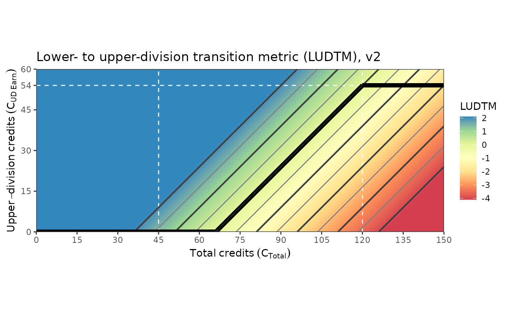

R/e_calc_ECURE_LUDTM.R
e_calc_ECURE_LUDTM2.RdNSF "Expanding Undergraduate Research Participation in General Education Courses to Improve STEM Persistence and Graduation Rates" (Award #1953349)
e_calc_ECURE_LUDTM2(
student_UpperDiv_cred = NA,
student_Total_cred = NA,
program_UpperDiv_cred_min = 54,
program_Total_cred_grad = 120,
program_cred_per_semester = 15
)student's current number of upper-division credits
student's current total credits earned
program's minimum upper-division credits at graduation
program's total number of credits for graduation
program's expected number of credits per semester
LUDTM Lower- to upper-division transition metric
This metric measures the number of semesters ahead of on-time graduation a student is for taking upper-division courses.
0 indicates the last chance for on-time graduation; all remaining courses must be upper-division
+1 indicates one semester ahead
-1 indicates one semester behind (the student will graduate at least 1 semester "late")
# Example: UD = 15 starting your senior semester gives:
e_calc_ECURE_LUDTM2(
student_UpperDiv_cred = 15
, student_Total_cred = 90
)
#> [1] -0.6
## Plot
# Constants
program_Total_cred_grad = 120 # graduation
program_UpperDiv_cred_min = 54 # minimum UD credits at graduation
program_last_chance = program_Total_cred_grad - program_UpperDiv_cred_min # start of UD credits
xlim = c(0, 150)
ylim = c(0, 60)
program_cred_per_semester = 15
dat <-
expand.grid(student_Total_cred = seq(xlim[1], xlim[2], by = 1)
, student_UpperDiv_cred = seq(ylim[1], ylim[2], by = 1)
, LUDTM = NA
)
for (i in 1:nrow(dat)) {
dat$LUDTM[i] <-
e_calc_ECURE_LUDTM2(
student_UpperDiv_cred = dat$student_UpperDiv_cred[i]
, student_Total_cred = dat$student_Total_cred[i]
#, program_UpperDiv_cred_min = 54
#, program_Total_cred_grad = 120
#, program_cred_per_semester = 15
)
# e_calc_ECURE_LUDTM2(
# student_UpperDiv_cred = dat$student_UpperDiv_cred[i]
# , student_Total_cred = dat$student_Total_cred[i]
# , program_last_chance
# , program_Total_cred_grad
# , program_UpperDiv_cred_min
# )
}
range_min = -4.1
range_max = +2.1
dat <-
dat |>
dplyr::mutate(
LUDTM =
dplyr::case_when(
LUDTM > range_max ~ range_max
, LUDTM < range_min ~ range_min
, TRUE ~ LUDTM
)
)
library(ggplot2)
p <- ggplot(dat, aes(x = student_Total_cred, y = student_UpperDiv_cred
, z = LUDTM, fill = LUDTM))
p <- p + geom_tile()
p <- p + scale_x_continuous(breaks = seq(xlim[1], xlim[2]
, by = program_cred_per_semester))
p <- p + scale_y_continuous(breaks = c(seq(ylim[1], ylim[2]
, by = program_cred_per_semester)
, program_UpperDiv_cred_min))
p <- p + coord_equal(expand = FALSE, xlim = xlim, ylim = ylim)
p <- p + geom_vline(xintercept = c(45, 120), linetype = 2, colour = "white")
p <- p + geom_hline(yintercept = c(program_UpperDiv_cred_min)
, linetype = 2, colour = "white")
p <- p + scale_fill_distiller(palette = "Spectral", direction = 1
, na.value = "white"
, breaks = seq(-10, 10, by = 1)
, limits = c(range_min, range_max))
p <- p + geom_contour(color = "gray50", binwidth = 0.5)
p <- p + geom_contour(color = "gray25", binwidth = 1.0, size = 0.8)
p <- p + geom_segment(aes(x = xlim[1], y = ylim[1], xend = program_last_chance
, yend = ylim[1])
, colour = "black", size = 2)
p <- p + geom_segment(aes(x = program_last_chance , y = ylim[1]
, xend = program_Total_cred_grad
, yend = program_UpperDiv_cred_min)
, colour = "black", size = 2)
p <- p + geom_segment(aes(x = program_Total_cred_grad
, y = program_UpperDiv_cred_min, xend = xlim[2]
, yend = program_UpperDiv_cred_min)
, colour = "black", size = 2)
p <- p + geom_segment(aes(x = (program_Total_cred_grad - program_UpperDiv_cred_min)
, y = ylim[1]
, xend = program_Total_cred_grad
, yend = program_UpperDiv_cred_min)
, colour = "darkgreen", linetype = 2, size = 0.1)
p <- p + theme_bw()
p <- p + labs(title = "Lower- to upper-division transition metric (LUDTM), v2")
p <- p + labs(subtitle = NULL)
#p <- p + labs(caption=paste0( bquote(Bold~line~is~upper-division~expectation~(C[UD Exp])),"."
#p <- p + labs(caption = paste0(
"Bold black line is upper-division expectation (C_[UD Exp])."
#> [1] "Bold black line is upper-division expectation (C_[UD Exp])."
# , "\nGray contour lines of LUDTM are at every 0.1."
# , "\nGreen plus signs indicate last chance to graduate on time."
# ))
p <- p + labs(x = bquote(Total~credits~(C[Total])))
p <- p + labs(y = bquote(Upper-division~credits~(C[UD~Earn])))
#p <- p + labs(x = "Total credits (C_Total)")
#p <- p + labs(y = "Upper-division credits (C_[UD Earn]")
p <- p + labs(fill = "LUDTM")
p <- p + theme(plot.caption = element_text(hjust = 0)) # Default is hjust=1, Caption align left
print(p)
#> Warning: The following aesthetics were dropped during statistical transformation: fill.
#> ℹ This can happen when ggplot fails to infer the correct grouping structure in
#> the data.
#> ℹ Did you forget to specify a `group` aesthetic or to convert a numerical
#> variable into a factor?
#> Warning: The following aesthetics were dropped during statistical transformation: fill.
#> ℹ This can happen when ggplot fails to infer the correct grouping structure in
#> the data.
#> ℹ Did you forget to specify a `group` aesthetic or to convert a numerical
#> variable into a factor?
